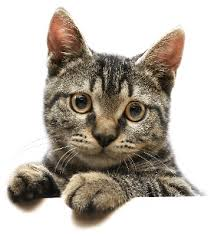
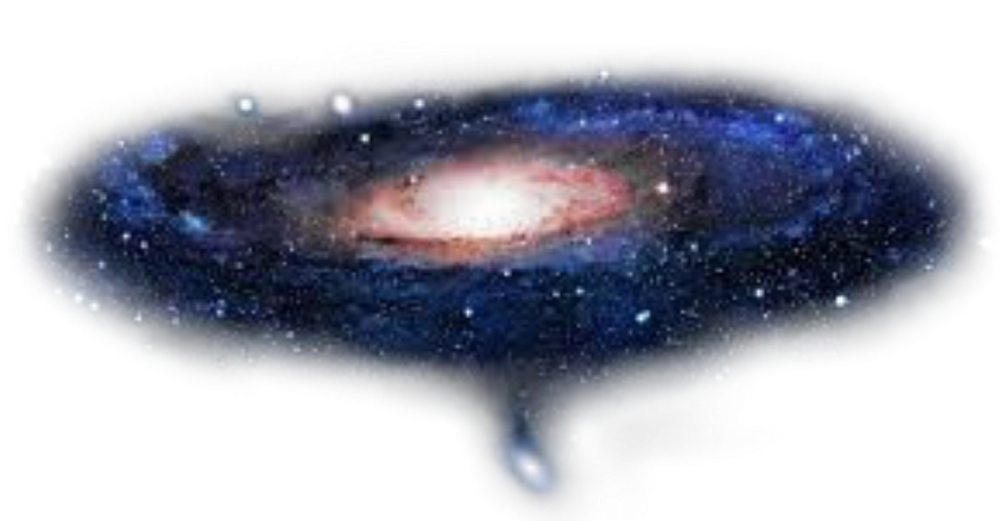

Começando de um jeito justo
SEGUE ABAIXO ALGUNS DOS MOTIVOS PELO QUAL VOCÊ PRECISA SER CANCELADO rs:
Uma Foto Nossa:
Toda vez que eu vejo dois gatinhos eu lembro da gente, mesmo se eles estiverem brigando ou sei la, principalmente se um dos gatos tiver a cor laranja ai eu lembro da gente mesmo

Pq eu fiz isso?
Além de ter a oportunidade de brincar um pouco e estudar html, eu queria fazer uma coisinha especial do meu jeito, acredito que nunk ngm tensha feito um site pra vc ne?? SKSKSK eu espero que não.
Pensei que ia ser legal pra deixar guardado e vc sempre se lembrar do quão importante você é pra mim, eu sei que você tá passando por um momento chato da vida, com aquela ansiedade chata, aql dorzinha no fundo do peito que a gente nem sabe pq existe e pq aparece do nada, mas que tem o poder de acabar com o dia de qualquer um né? Eu sei como é.
Na verdade eu não sei muito bem pq cada um tem sua maneira de sentir e passar por esses momentos, mas pode ter certeza que independente de qualquer coisa, eu sempre to aqui por vc, seja fazendo uns sites aleatórios ou até do seu lado papeando sobre tudo e escutando vc desabafar. Você é extremamente importante pra mim, a vida é completamente sem graça e insuportavelmente chata quando vc não tá comigo fazendo piada ou cosca em mim ksksks por mais que eu não aguente muita cosca eu amo.
Mo é isso, eu queria deixar tudo mais bonitinho e fofo porém isso é extremamente chato e cansativo KKKK e eu quero te mandar isso ainda hoje pq sei que vc ta xoxo, espero que melhore seu dia!! eu te amo mais do que tudo no mundo❤️❤️❤️❤️❤️❤️❤️❤️❤️
te amo mais do que eu amo isto: 
e mais do que eu amo isto: 
te amo nesse tamanhão aqui ó: 
e é isso, obrigada pela atenção e pff nao me abandona nunk eu te imploro.